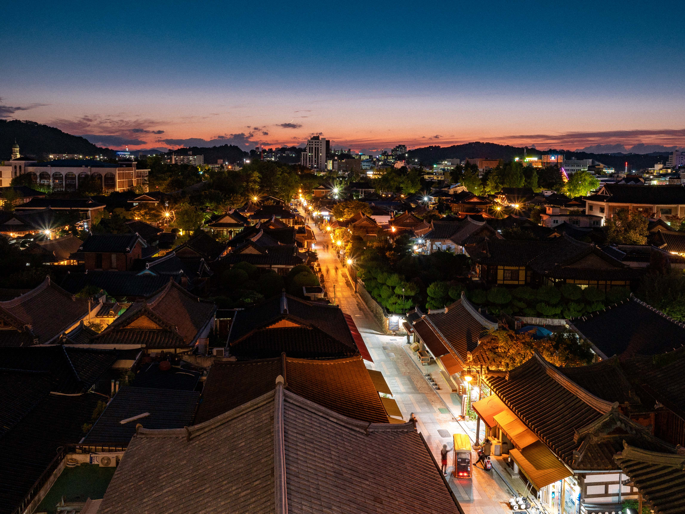

Hypertext Markup Language (HTML) is the standard markup language for creating web pages and web applications. Unique Venue, where peculiar feature and cultural aspects of hosting area are unveiled, will definitely add depth to significance of an event and thus elevate its value.Korea Tourism Organization has laid its focus on and efforts to MICE industry which continues to attract global attention, and thus selected 30 places for 2020 Korea Unique Venue.

These are selected with close attention to details ranging from convenient facilities, key feature, past experience in hosting events, to potentials. It is to offer guideline for making optimal choice for any types of events whether that are smaller-sized events or global events hosting leaders from around the globe. Korea boasts beautiful weather, delicious food, majestic natural landscape and scenery and excellent hospitality, and we are proud to present the highlights of such with 2020 Korea Unique Venue. 2020 Korea Unique Venue has been completed based on recommendation from industry experts and professionals and on-site survey, and we sincerely hope that this will make a useful guideline for selecting venue adequate to purpose and size of events.